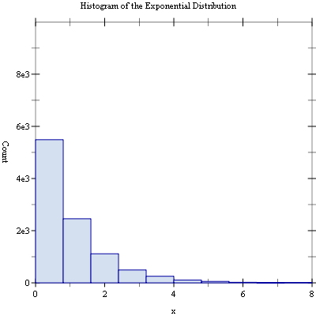
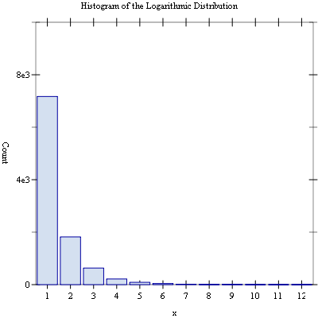

9 Histograms
This chapter describes the functions for creating and using histograms provided by the Science Collection. Histograms provide a convenient way of summarizing the distribution of a set of data. A histogram contains a vector of bins that count the number of events falling within a given range. The bins of a histogram can be used to record both integer and non-integer distributions.
The ranges can be either continuous or discrete over a range. For continuous ranges, the width of these ranges can be either fixed or arbitrary. Also, for continuous ranges, both one- and two-dimensional histograms are supported.
9.1 Histograms
The histogram functions described in this section are defined in the "histogram.rkt" file in the Science Collection and are made available using the form:
| (require (planet williams/science/histogram)) |
procedure
(histogram? x) → boolean?
x : any/c
9.1.1 Creating Histograms
procedure
(make-histogram n) → histogram?
n : exact-positive-integer?
procedure
(make-histogram-with-ranges-uniform n x-min x-max) → histogram? n : exact-positive-integer? x-min : real? x-max : (>/c x-min)
9.1.2 Updating and Accessing Histogram Elements
procedure
h : histogram?
procedure
(histogram-ranges h) → (vectorof real?)
h : histogram?
procedure
(set-histogram-ranges! h ranges) → void?
h : histogram?
ranges :
(and/c (vectorof real?) (lambda (x) (= (vector-length ranges) (+ (histogram-n h) 1))))
procedure
(set-histogram-ranges-uniform! h x-min x-max) → void? h : histogram? x-min : real? x-max : (>/c x-min)
procedure
(histogram-bins h) → (vectorof real?)
h : histogram?
procedure
(histogram-increment! h x) → void?
h : histogram? x : real? (unchecked-histogram-increment! h x) → void? h : histogram? x : real?
procedure
(histogram-accumulate! h x weight) → void?
h : histogram? x : real? weight : (>=/c 0.0) (unchecked-histogram-accumulate! h x weight) → void? h : histogram? x : real? weight : (>=/c 0.0)
procedure
(histogram-get h i) → (>=/c 0.0)
h : histogram?
i :
(and/c exact-nonnegative-integer? (</c (histogram-n h)))
procedure
(histogram-get-range h i) →
real? real? h : histogram?
i :
(and/c exact-non-negative-integer? (</c (histogram-n h)))
9.1.3 Histogram Statistics
procedure
(histogram-max h) → (>=/c 0.0)
h : histogram?
procedure
(histogram-min h) → (>=/c 0.0)
h : histogram?
procedure
(histogram-sum h) → (>=/c 0.0)
h : histogram?
procedure
(histogram-mean h) → (>=/c 0.0)
h : histogram?
procedure
(histogram-sigma h) → (>=/c 0.0)
h : histogram?
9.1.4 Histogram Graphics
The histogram graphics functions are defined in the file "histogram-graphics.rkt" in the Science Collection and are made available using the following form:
| (require (planet williams/science/histogram-graphics)) |
procedure
(histogram-plot h [title]) → any
h : histogram? title : string? = "Histogram"
procedure
(histogram-plot-scaled h [title]) → any
h : histogram? title : string? = "Histogram"
9.1.5 Histogram Examples
Example: Histogram of random variates from the unit Gaussian (normal) distribution.
#lang racket (require (planet williams/science/random-distributions/gaussian) (planet williams/science/histogram-with-graphics)) (let ((h (make-histogram-with-ranges-uniform 40 -3.0 3.0))) (for ((i (in-range 10000))) (histogram-increment! h (random-unit-gaussian))) (histogram-plot h "Histogram of the Unit Gaussian (Normal) Distribution"))
The following figure shows the resulting histogram:

Example: Scaled histogram of random variates from the exponential distribution with mean 1.0.
#lang racket (require (planet williams/science/random-distributions/exponential) (planet williams/science/histogram-with-graphics)) (let ((h (make-histogram-with-ranges-uniform 10 0.0 8.0))) (for ((i (in-range 10000))) (histogram-increment! h (random-exponential 1.0))) (histogram-plot-scaled h "Histogram of the Exponential Distribution"))
The following figure shows the resulting histogram:

9.2 2D Histograms
The 2D histogram functions described in this section are defined in the "histogram-2d.rkt" file in the Science Collection and are made available using the form:
| (require (planet williams/science/histogram-2d)) |
procedure
(histogram-2d? x) → boolean?
x : any/c
9.2.1 Creating 2D Histograms
procedure
(make-histogram-2d nx ny) → histogram-2d?
nx : exact-positive-integer? ny : exact-positive-integer?
procedure
(make-histogram-2d-with-ranges-uniform nx xy x-min x-max y-min y-max) → histogram-2d? nx : exact-positive-integer? xy : exact-positive-integer? x-min : real? x-max : (>/c x-min) y-min : real? y-max : (>/c y-min)
9.2.2 Updating and Accessing 2D Histogram Elements
procedure
h : histogram-2d?
procedure
h : histogram-2d?
procedure
(histogram-2d-x-ranges h) → (vectorof real?)
h : histogram-2d?
procedure
(histogram-2d-y-ranges h) → (vectorof real?)
h : histogram-2d?
procedure
(set-histogram-2d-ranges! h x-ranges y-ranges) → void? h : histogram?
x-ranges :
(and/c (vectorof real?) (lambda (x) (= (vector-length x-ranges) (+ (histogram-2d-nx h) 1))))
y-ranges :
(and/c (vectorof real?) (lambda (x) (= (vector-length y-ranges) (+ (histogram-2d-ny h) 1))))
procedure
(set-histogram-2d-ranges-uniform! h x-min x-max y-min y-max) → void? h : histogram? x-min : real? x-max : (>/c x-min) y-min : real? y-max : (>/c y-min)
procedure
(histogram-2d-bins h) → (vectorof real?)
h : histogram?
procedure
(histogram-2d-increment! h x y) → void?
h : histogram? x : real? y : real? (unchecked-histogram-2d-increment! h x y) → void? h : histogram? x : real? y : real?
procedure
(histogram-2d-accumulate! h x y weight) → void?
h : histogram? x : real? y : real? weight : (>=/c 0.0)
(unchecked-histogram-2d-accumulate! h x y weight) → void? h : histogram? x : real? y : real? weight : (>=/c 0.0)
procedure
(histogram-2d-get h i j) → (>=/c 0.0)
h : histogram?
i :
(and/c exact-nonnegative-integer? (</c (histogram-nx h)))
j :
(and/c exact-nonnegative-integer? (</c (histogram-ny h)))
procedure
(histogram-2d-get-x-range h i j) →
real? real? h : histogram?
i :
(and/c exact-non-negative-integer? (</c (histogram-nx h)))
j :
(and/c exact-non-negative-integer? (</c (histogram-ny h)))
procedure
(histogram-2d-get-y-range h i j) →
real? real? h : histogram?
i :
(and/c exact-non-negative-integer? (</c (histogram-nx h)))
j :
(and/c exact-non-negative-integer? (</c (histogram-ny h)))
9.2.3 2D Histogram Statistics
procedure
(histogram-2d-max h) → (>=/c 0.0)
h : histogram-2d?
procedure
(histogram-2d-min h) → (>=/c 0.0)
h : histogram-2d?
procedure
(histogram-2d-sum h) → (>=/c 0.0)
h : histogram-2d?
procedure
(histogram-2d-x-mean h) → (>=/c 0.0)
h : histogram-2d?
procedure
(histogram-2d-y-mean h) → (>=/c 0.0)
h : histogram-2d?
procedure
(histogram-2d-x-sigma h) → (>=/c 0.0)
h : histogram-2d?
procedure
(histogram-2d-y-sigma h) → (>=/c 0.0)
h : histogram-2d?
procedure
(histogram-2d-covariance h) → (>=/c 0.0)
h : histogram-2d?
9.2.4 2D Histogram Graphics
The 2D histogram graphics functions are defined in the file "histogram-2d-graphics.rkt" in the Science Collection and are made available using the following form:
| (require (planet williams/science/histogram-2d-graphics)) |
procedure
(histogram-2d-plot h [title]) → any
h : histogram-2d? title : string? = "Histogram"
9.2.5 2D Histogram Examples
Example: 2D histogram of random variates from the bivariate Gaussian distribution with standard deviation 1.0 in both the x and y direction and correlation coefficient 0.0.
#lang racket (require (planet williams/science/random-distributions/bivariate) (planet williams/science/histogram-2d-with-graphics)) (let ((h (make-histogram-2d-with-ranges-uniform 20 20 -3.0 3.0 -3.0 3.0))) (for ((i (in-range 10000))) (let-values (((x y) (random-bivariate-gaussian 1.0 1.0 0.0))) (histogram-2d-increment! h x y))) (histogram-2d-plot h "Histogram of the Bivariate Gaussian Distribution"))
The following figure shows the resulting histogram:

9.3 Discrete Histograms
The discrete histogram functions described in this section are defined in the "discrete-histogram.rkt" file in the Science Collection and are made available using the form:
| (require (planet williams/science/discrete-histogram)) |
procedure
(discrete-histogram? x) → boolean?
x : any/c
9.3.1 Creating Discrete Histograms
procedure
(make-discrete-histogram n1 n2 [dynamic?]) → discrete-histogram?
n1 : integer? n2 : (and/c integer? (>=/c n1)) dynamic? : boolean = #t (make-discrete-histogram) → discrete-histogram?
9.3.2 Updating and Accessing Discrete Histogram Elements
procedure
h : discrete-histogram?
procedure
h : discrete-histogram?
procedure
h : discrete-histogram?
procedure
(discrete-histogram-bins h) → (vectorof real?)
h : discrete-histogram?
procedure
(discrete-histogram-increment! h i) → void?
h : discrete-histogram? i : integer?
(unchecked-discrete-histogram-increment! h i) → void? h : discrete-histogram? i : integer?
procedure
(discrete-histogram-accumulate! h i weight) → void?
h : discrete-histogram? i : integer? weight : (>=/c 0.0)
(unchecked-discrete-histogram-accumulate! h i weight) → void? h : discrete-histogram? i : integer? weight : (>=/c 0.0)
procedure
(discrete-histogram-get h i) → (>=/c 0.0)
h : discrete-histogram?
i :
(and/c integer? (>=/c (discrete-histogram-n1 h)) (<=/c (discrete-histogram-n2 h)))
9.3.3 Discrete Histogram Statistics
procedure
(discrete-histogram-max h) → (>=/c 0.0)
h : discrete-histogram?
procedure
(discrete-histogram-min h) → (>=/c 0.0)
h : discrete-histogram?
procedure
(discrete-histogram-sum h) → (>=/c 0.0)
h : discrete-histogram?
procedure
(discrete-histogram-mean h) → (>=/c 0.0)
h : discrete-histogram?
procedure
(discrete-histogram-sigma h) → (>=/c 0.0)
h : discrete-histogram?
9.3.4 Discrete Histogram Graphics
The discrete histogram graphics functions are defined in the file "discrete-histogram-graphics.rkt" in the Science Collection and are made available using the following form:
| (require (planet williams/science/discrete-histogram-graphics)) |
procedure
(discrete-histogram-plot h [title]) → any
h : discrete-histogram? title : string? = "Histogram"
procedure
(discrete-histogram-plot-scaled h [title]) → any
h : discrete-histogram? title : string? = "Histogram"
9.3.5 Discrete Histogram Examples
Example: Discrete histogram of random variates from the Poisson distribution with mean 10.0.
#lang racket (require (planet williams/science/random-distributions/poisson) (planet williams/science/discrete-histogram-with-graphics)) (let ((h (make-discrete-histogram))) (for ((i (in-range 10000))) (discrete-histogram-increment! h (random-poisson 10.0))) (histogram-plot h "Histogram of the Poisson Distribution"))
The following figure shows the resulting histogram:

Example: Scaled discrete histogram of random variates from the logarithmic distribution with probability 0.5.
#lang racket (require (planet williams/science/random-distributions/logarithmic) (planet williams/science/discrete-histogram-with-graphics)) (let ((h (make-discrete-histogram))) (for ((i (in-range 10000))) (discrete-histogram-increment! h (random-logarithmic 0.5))) (discrete-histogram-plot-scaled h "Histogram of the Logarithmic Distribution"))
The following figure shows the resulting histogram:
